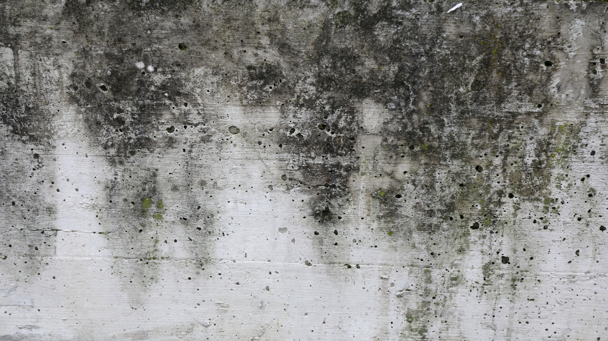

We provide professional mold inspection and remediation services that help homeowners address cold-weather moisture issues before they lead to costly damage or indoor air quality concerns.
Mold is commonly associated with warm, humid months, but winter often creates even more favorable conditions for hidden growth inside homes. Colder temperatures change how moisture behaves indoors, and tightly sealed homes allow humidity to linger in places most homeowners rarely check. Understanding the seasonal causes of winter mold problems helps property owners take early action and avoid long-term damage.
During winter, homes are closed up to retain heat, which significantly reduces natural ventilation. Everyday activities like cooking, showering, and running appliances release moisture into the air, and without adequate airflow, that moisture remains indoors. Over time, humidity levels rise enough to support mold growth, especially in enclosed areas.
Cold exterior temperatures also cause condensation when warm indoor air meets cooler surfaces. This moisture often forms on windows, exterior walls, and inside attics or crawl spaces. When condensation repeatedly appears in the same locations, it can soak into drywall, insulation, or wood framing, creating ideal conditions for mold colonies to develop unnoticed. Homeowners experiencing moisture concerns often benefit from professional evaluation through a trusted mold remediation service.
Heating systems play an important role in indoor comfort, but they can also contribute to winter mold issues. Forced-air systems circulate warm air throughout the home, and when ducts contain moisture or dust, mold spores can spread from room to room. Inconsistent heating may also create cold spots where condensation forms more frequently.
Common problem areas include window sills, attic corners, basements, and areas near exterior vents. These locations often stay damp without visible standing water, allowing mold to grow quietly. When moisture problems overlap with previous leaks or unnoticed water damage, mold can spread rapidly before signs become obvious. Scheduling inspections after storms or plumbing issues helps reduce this risk and supports faster response through professional water damage restoration.
Winter places extra strain on plumbing systems as pipes contract in colder temperatures. Small cracks or slow leaks behind walls and under floors may go unnoticed for weeks, releasing just enough moisture to support mold growth. Because these leaks are hidden, damage often progresses without visible warning signs.
Roof damage caused by winter storms can also allow moisture into attic spaces or insulation. As snow or ice melts, water may seep into building materials and remain trapped due to limited airflow. Over time, this trapped moisture compromises structural materials and increases the likelihood of mold spreading into living spaces. Addressing storm-related damage quickly with professional restoration services helps limit both structural and indoor air quality concerns.
Winter mold problems are harder to detect because windows stay closed and odors do not dissipate easily. Subtle indicators such as persistent condensation, peeling paint, or musty smells may be dismissed as seasonal issues. Some homeowners notice increased allergy-like symptoms without realizing mold spores are circulating through heating systems.
Uneven heating and damp insulation are additional red flags. Moist insulation loses effectiveness and creates temperature imbalances that encourage further condensation. This cycle allows mold to expand quietly, increasing cleanup costs and potential health risks if left unaddressed.
Health remains the primary concern for most homeowners. Mold exposure can affect respiratory comfort, particularly for children, older adults, or those with existing sensitivities. Spending more time indoors during winter increases exposure risk when mold is present.
Property damage is another major issue. Mold can weaken drywall, flooring, and framing materials over time, leading to expensive repairs. Insurance questions often arise as well, especially when mold stems from frozen pipes or storm-related leaks. According to guidance from the Environmental Protection Agency, moisture control remains the most effective way to prevent mold growth indoors.
Reducing winter mold risk starts with controlling indoor humidity and addressing moisture quickly. Monitoring humidity levels, checking insulation, and maintaining heating systems all play a role. Prompt repair of leaks, no matter how small, prevents moisture from lingering in hidden spaces.
Professional inspections provide clarity when mold is suspected. Advanced tools allow technicians to locate moisture behind walls and under flooring before damage spreads. Early intervention keeps remediation contained and protects the home from larger reconstruction needs later.
Winter mold issues often require specialized containment and drying strategies due to lower outdoor temperatures. Experienced restoration teams understand how to remove affected materials safely while preventing spores from spreading through the home.
If you’re looking for dependable help with winter mold problems, SWAT Restoration offers fast-response mold remediation, water damage cleanup, and reconstruction services throughout North Texas. Our team identifies the source of moisture, handles cleanup with care, and helps homeowners move forward with confidence during the coldest months of the year.